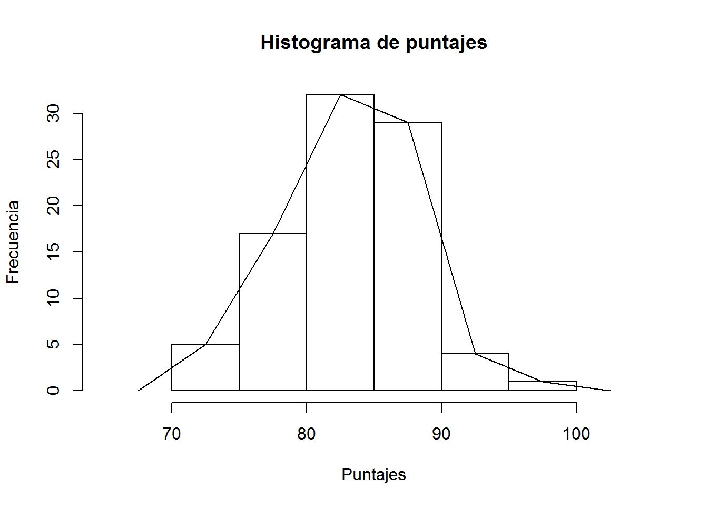
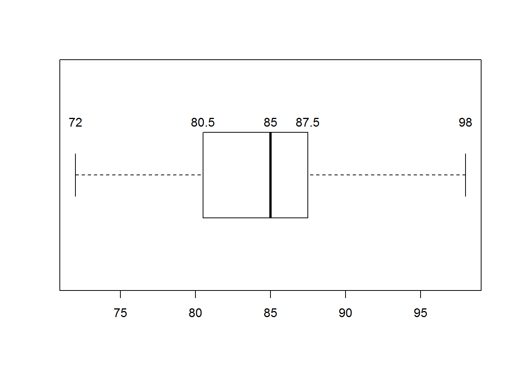

TRABAJO PRÁCTICO N°1
Ejercicio 11
Además de la resolución del ejercicio vamos a darles los comandos de R que usamos para producir los resultados. Para cargar los dados:
datos <- c(84, 85, 87, 72, 88, 87, 86, 88, 80, 82, 88, 76, 75, 85, 81, 93, 84, 80,
83, 89, 83, 88, 87, 80, 80, 87, 84, 83, 88, 85, 98, 85, 91, 83, 78, 82, 85, 80,
80, 92, 76, 81, 75, 86, 84, 82, 89, 85, 88, 85, 89, 83, 87, 85, 85, 80, 92, 86,
78, 89, 88, 81, 90, 85, 72, 87, 80, 87, 83, 89, 80, 90, 90, 87, 72, 87, 82, 85,
78, 80, 90, 77, 84, 84, 89, 79, 81, 85)a) Distribución de frecuencias con intervalos de amplitud 5.
intervalos <- seq(70,100,5)
tabla <- as.data.frame(table(cut(datos,intervalos)))
tabla## Var1 Freq
## 1 (70,75] 5
## 2 (75,80] 17
## 3 (80,85] 32
## 4 (85,90] 29
## 5 (90,95] 4
## 6 (95,100] 1b) Trazar el histograma y el polígono.
histograma <- hist(datos, xlim = c(65,105), xlab = "Puntajes", ylab =
"Frecuencia", main = "Histograma de puntajes")
lines(c(67.5,histograma$mids,102.5), c(0,histograma$counts,0))
c) Formar la distribución de porcentajes acumulados.
tabla$FrecRel <- tabla$Freq/sum(tabla$Freq)
tabla$RelPor <- tabla$FrecRel*100
tabla$PorAcu <- cumsum(tabla$RelPor)
tabla## Var1 Freq FrecRel RelPor PorAcu
## 1 (70,75] 5 0.05681818 5.681818 5.681818
## 2 (75,80] 17 0.19318182 19.318182 25.000000
## 3 (80,85] 32 0.36363636 36.363636 61.363636
## 4 (85,90] 29 0.32954545 32.954545 94.318182
## 5 (90,95] 4 0.04545455 4.545455 98.863636
## 6 (95,100] 1 0.01136364 1.136364 100.000000d) ¿Cuál es el puntaje más típico?
table(datos)## datos
## 72 75 76 77 78 79 80 81 82 83 84 85 86 87 88 89 90 91 92 93 98
## 3 2 2 1 3 1 10 4 4 6 6 12 3 9 7 6 4 1 2 1 1El puntaje más típico es 85. Este puntaje se repite 12 veces. Es la moda de la muestra. Si no contáramos con los datos originales sino con la tabla de frecuencia por intervalos, diríamos que el valor más típico está en el intervalo (80,85] que es la marca de clase del intervalo con mayor frecuencia.
e) ¿Cuál es el recorrido de los puntajes?
max(datos) - min(datos)## [1] 26El puntaje máximo es 98 y el puntaje mínimo es 72, por lo tanto el recorrido es 22 (98-76 = 22).
f) ¿Qué porcentaje de estudiantes tuvo un puntaje de menos de 80?
Observando en la tabla las frecuencias porcentuales acumuladas, podemos decir que el 25% tuvo un puntaje menor o igual a 80. Si no contáramos con los datos, esta debería ser nuestra respuesta definitiva ya que no podemos saber exactamente cuántos datos alcanzaron 80. De hecho al utilizar intervalos estamos trabajando la variable como continua y suponiendo que dentro del intervalo hay una distribución uniforme de los datos con lo cual sería correcto asumir que el 25% tuvo un puntaje menor a 80. Al contar con los datos, podríamos construir los intervalos de manera que se incluya en el extremo izquierdo en vez del derecho, entonces la tabla nos queda:
tabla2 <- as.data.frame(table(cut(datos,intervalos, right = FALSE)))
tabla2$FrecRel <- tabla2$Freq/sum(tabla2$Freq)
tabla2$RelPor <- tabla2$FrecRel*100
tabla2$PorAcu <- cumsum(tabla2$RelPor)
tabla2## Var1 Freq FrecRel RelPor PorAcu
## 1 [70,75) 3 0.03409091 3.409091 3.409091
## 2 [75,80) 9 0.10227273 10.227273 13.636364
## 3 [80,85) 30 0.34090909 34.090909 47.727273
## 4 [85,90) 37 0.42045455 42.045455 89.772727
## 5 [90,95) 8 0.09090909 9.090909 98.863636
## 6 [95,100) 1 0.01136364 1.136364 100.000000Ahora podemos decir que aproximadamente el 13.64% de los estudiantes tuvo un puntaje menor a 80.
g) El 85% de los estudiantes tuvo puntajes menores ¿a qué valor?
Lo que nos esta pidiendo el problema es que calculemos el percentil 85. Al observar las frecuencias porcentuales acumuladas vemos que el dato que llegaría al 85% se encuentra en el intervalo [85, 90). El total de datos que tenemos es de 88, con lo cual aplicando la fórmula P85=Linf+c((95N/100)-Fi-1)/fi tenemos P85=85+5(95*88/100)-47.73)/42.05 y nos da como resultado 89,27. Es decir que el 85% tuvo un puntaje menor a 89.27.
h)¿Qué forma tiene la distribución de los datos? Realizar un box plot.
boxplot(datos, horizontal = TRUE)
text(x = boxplot.stats(datos)$stats, labels = boxplot.stats(datos)$stats, y =1.25)
i) Calcular las medidas de dispersión que considere apropiadas.
El rango es 26 (98-72=26). El recorrido intercuartilico es 7 (87.5-80.5 = 7). La gran diferencia entre el rango y el recorrido intercuartílico nos indica que hay una concentración importante del 50% centrales de los datos y una mayor dispersión del resto.
var(datos)## [1] 23.98211sd(datos)## [1] 4.897153summary(datos)## Min. 1st Qu. Median Mean 3rd Qu. Max.
## 72.00 80.75 85.00 84.08 87.25 98.00La varianza es de 23.98211 y el desvío estándar de 4.897153. Para analizar estos estadísticos es necesario conocer la media, cuyo valor es 84.08. A partir de este valor y de la desviación estándar podemos concluir, apoyados incluso por el histograma, que hay una concentración de los datos alrededor de la media. Además no se observar un sesgo importante ni a derecha ni a izquierda.